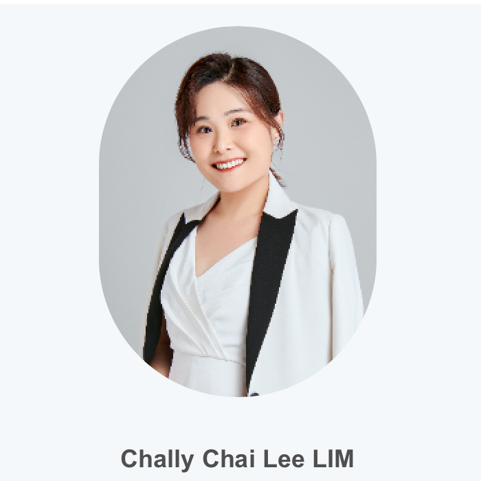

Research
The Faculty's research “Mission” is to create a vibrant research ecosystem and nurture excellence in academic research across the humanities and social science disciplines to support UIC's development as a leading university in the Greater Bay Area.
Research topic
- Study on the Situation of Children in Poverty in Macao
- Social Worker Legislation Project of Guangdong Provincial Department of Civil Affairs
- Social Elderly Service Model Exploration and Inquiry Project
- Study on the Action of Accessible Financial Services of Banks in Zhuhai
- Study on the Service Status and Demand Situation of Shuttle Rehabus Service and Stairlift Service in Macao
Courses
51
Major Required Courses
12
Major Elective Courses
36
Major Elective Courses
9
General Education Programme
30
Free Elective Courses
147
Total
Staff
- Advertising and society
- Creative Industries
- International branding
Academic research direction
-

- Communication Studies
- Spatial Production/Organizational Space
- Ethnography
Academic research direction
Academic research direction
- Attitudinal and behavioral changes when accepting new media tech and placed credibility
on information.
- Visual communication
- Symbols
- Branding
Academic research direction
- Consumer culture
- Global communications of Chinese companies and organizations
- visual research
Academic research direction
Events

Lecture of IMC Competition for National Students: "Future Jinli Award - Smart Media Campus" came to UIC
Mr. Li Ruitao, Product Manager of Diversified Development Business Department of Southern Metropolis Daily, explained what integrated marketing is to the students and analyzed the case of Southern Metropolis Daily itself. He introduced the overall concept of integrated marketing.

Applied Translation Studies hosts "Translating with Color" - Third Annual ATS Translation Week Series a Success
The Applied Translation Studies program organized "Translating with Color" - the 3rd ATS Translation Week series of activities to celebrate this year's International Translation Day, to pay tribute to translators and language professionals around the world for their contributions to breaking down language barriers, communicating with different cultures.
Contact

T2-602-R16, R19, 2000 Jintong Road, Tangjiawan, Zhuhai, GD 219087, China
uicfhss@uic.edu.cn

Monday-Friday: 8:30-12:00 & 13:30-17:00

(86)756-3620717